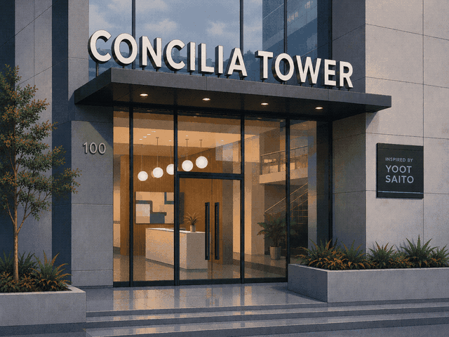

the faithful SimTower port — in your browser
Bring your own copy of SIMTOWER.EXE — or the compressed SIMTOWER.EX_ straight off the CD; this page expands it. It is parsed entirely in your browser to load the game's original art and sound — there is no server, and the file never leaves your machine.
SIMTOWER folder.SIMTOWER.EX_ (note
the underscore) — drop that here as-is; this page expands
it for you. Open a CD image with 7-Zip or any unarchiver to
get at it. No installer needed.SIMTOWER.E1_ and SIMTOWER.E2_ —
select the two together and drop both at once.SIMTOWER.EXE or SIMTOWER.EX_.Your EXE and saves live in this browser's local storage only — upload once, it's remembered here. Sound starts with your first click (browser rule, not ours).
The game hit an internal error. Your last save is safe in this browser. Reloading the page picks it back up.
If this keeps happening, send Jonah a screenshot of this box (build __CT_VERSION__).